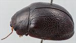
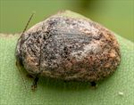
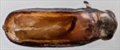
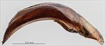
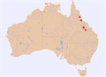

Click on images to enlarge
.jpg){kind=link}

Male, Belyando Crossing, central Queensland


Male, Belyando Crossing, central Queensland


Aedeagus, dorsal view (Clermont, central Queensland)


Aedeagus, lateral view (Clermont, central Queensland)


Distribution
Name
Trachymela sp. Ta172
Reference specimen
2019-023, Clermont, central Queensland.
Adult Description
Length: ♂ 5.4–6.7 mm (n=7), ♀ 5.8–6.7 mm (n=5).
Colouration:
- Head: uniformly dark brown (rarely slightly lighter brown) with only lateral extremes of fronto-clypeal suture sometimes darker brown, labrum yellowish-brown, mandibles brown with black tips; antennomeres 1–3 light- or mid-brown, 4–6 grading darker, 7–11 dark brown.
- Pronotum: dark brown, mostly fractionally darker than head with irregular patches of a fractionally paler brown scattered throughout, foveal areas to lateral edges slightly to considerably paler brown, lateral margins very dark brown or black.
- Scutellum: brown, concolorous with or considerably darker shade than adjacent area of pronotum, if the former, lateral margins broadly edged in dark brown.
- Elytra: brown, concolorous with or fractionally darker shade than darkest shade on pronotum with a complex patchwork of areas of a paler shade of brown scattered throughout, these usually associated with expanded interstices and may form oblique bands in posterior half of elytral disc, punctures concolorous with interstices, humeral callus concolorous with or darker than surrounds.
- Venter & Legs: prosternum and thoracic ventrites dark brown, legs concolorous with or slightly darker, abdominal ventrites concolorous with thoracic or slightly lighter in shade, elytral epipleura brown, sometimes with posterior half black.
- Cuticular Wax: mostly mid-brown with a relatively dense and even to somewhat uneven coverage over much of head, pronotum and posterior half and lateral areas of elytra with the coverage on especially the posterior of elytra often including small patches of exceptionally thick wax; the area of the elytra extending from anterior edge between the two humeral calli to a point on suture a little posterior to elytral summit is substantially free or only very sparsely sprinkled with wax, the border of this area consists of a broad and somewhat uneven band of light-grey cuticular wax, a small patch of light-grey wax is also often present in elytral marginal area slightly anteriorly to centre.
Morphology:
- Head: punctures moderately large (pd ≈ 1.5–2×ef) and relatively evenly and densely distributed. Antennae short (AL/BL: ♂ 34–36%, ♀ 30.7%), filiform.
- Pronotum: almost evenly curved transversely, at most minimally explanate only at extreme margins, foveal depressions absent with a very shallow elevation in its place, usually with one or a few large punctures in centre, discal area smooth, puncturation very clearly impressed with individual punctures somewhat larger than those on head and very evenly distributed and moderately dense in discal area (spacing ≈ 2pd), many much finer punctures scattered on the interstices, punctures becoming much coarser at lateral margins. Front margins join lateral margins in a smoothly rounded right-angle, with lateral margin straight for some length then curving smoothly and gradually towards the thicker rear margin, a few shallow, smooth crenulations may be present.
- Scutellum: surface smooth or wrinkled, sometimes with a few very shallow punctures.
- Elytra: relatively narrow (width = 65–76% BL), greatest height viewed laterally is slightly in front of middle of elytral margin, evenly curved from scutellum to some distance past greatest height with curvature increasing noticeably from there towards apex, thoracic ventrites extend below elytral margin; surface evenly curved transversely over discal region, not explanate at margins, punctures large and distinct, evenly distributed over almost all of surface, interstices variable from relatively flat to noticeably elevated and expanded into weal-like short longitudinal ridges that may form oblique bands in posterior half, always with a scatter of very fine punctures, surface continuous or very slightly discontinuous under humeral callus, elytral suture carinate in apical third, lateral marginal area vertical (not explanate) with sinuate edges; vertical extension of epipleura small (HCE/PW = 0.29–0.32).
- Venter: prosternal process relatively wide, almost parallel-sided or slightly sinuate, closed or lightly open anteriorly, a sparse scatter of long setae present along sides of prosternal process, a few also on mesoventrite, a single seta on anterior and median trochanter; front edge of metaventrite beveled, truncate.
Male Genitalia (Aedeagus):
- Dimensions: moderately-sized (LPE/BL = 27–30%).
- Dorsal view: sides of shaft parallel from basal sulcus to apical end of ostium from where they converge in a gentle and even curve towards apex, spatula very small, tip small, dorsal surface lightly sclerotized, with faint dorso-median channel, dorsolateral channels almost obsolete, no more than shallow depressions in dorsal surface, ostium relatively small with ostial processes short and making its posterior edge a blunt triangle.
- Lateral view: shaft lightly and almost evenly curved throughout its length, thinning gradually and evenly from about mid-point to the small and only very slightly deflexed tip.
Immature Stages
Unknown.
Similar species
- Ta47: Similar in size to Ta172, also occurs on Corymbia sp. with overlapping distributions. Ta47 is more uniform in dorsal colouration than Ta172, usually having an elytral surface that is uniformly brown or at most with a few lighter-coloured weals in the posterior half. Ta47 has longer antennae in both sexes, while its elytral margins are wider (HCE/PW = 0.32–0.36) than those of Ta172. The aedeagus of the two species are quite different.
- Ta192: Though occurring in north-western Western Australia, this species is almost identical to Ta172 in external morphology (including the arrangement of the paler-coloured interstices) and size. However, its aedeagus is lanceolate in shape and more than 6% shorter.
Notes
- Host Associations: Individuals of this species are found on bloodwoods and ghost gums, with Blakella dallachiana and Corymbia clarksoniana recorded as hosts.
- Morphological Variation: The two female specimens collected near Emerald are slightly different in a number of characters from the Clermont specimens (which include the only male). These differences are in the disposition of the elytral interstices, the colour of the scutellum, etc.
Copyright © 2026. All rights reserved.